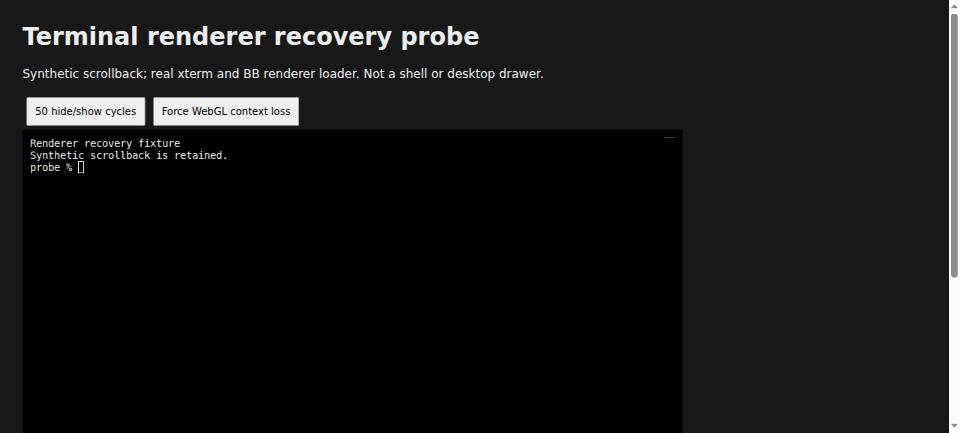
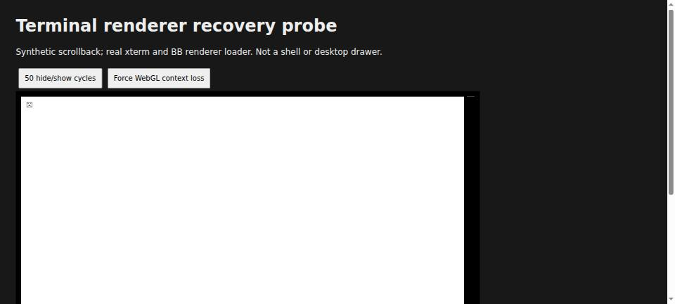
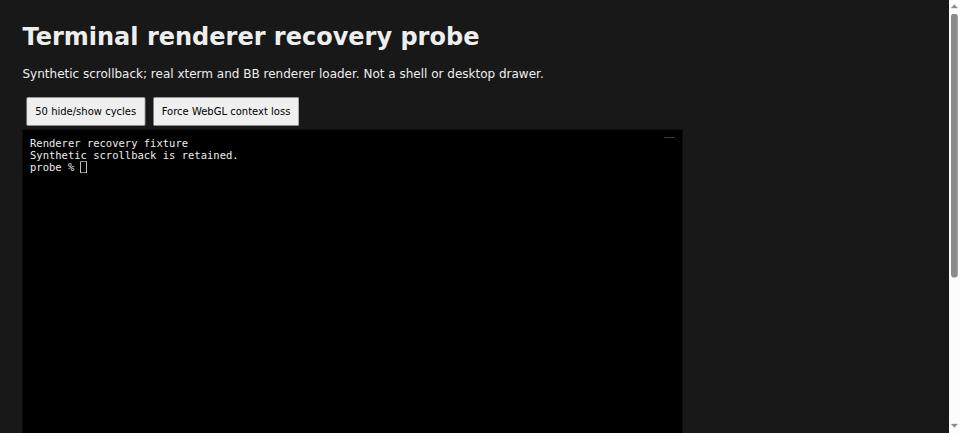

#6554 · Renderer context-loss recovery probe
Verdict: NOT REPRODUCED · Root-cause confidence: low
1. TL;DR
The report describes an intermittently invisible desktop terminal while its shell remains alive. I could not reproduce that persistent failure on trusted main. A real-xterm renderer probe survived 50 hide/show cycles and recovered its visible text after forced WebGL context loss, in both clean checkouts. Current main already disposes the failed WebGL addon and falls back to the DOM renderer. This Linux Chromium result does not disprove a macOS Electron, sleep/wake, display-change, or floating-drawer lifecycle defect; its cause remains undetermined.
2. Claims vs findings
| Claim | Status | Evidence |
|---|---|---|
| Normal use can leave the desktop terminal persistently black. | Unverified | No deterministic trigger; native macOS desktop was not available. The probe is not the floating drawer. |
| The shell and scrollback survive the incident. | Unverified for the reported incident | No reporter runtime was accessed. The synthetic xterm buffer remains unchanged in the probe; it has no PTY. |
| WebGL context loss is not handled. | Not supported by current-main evidence | The existing BB callback disposes the addon. Both real-browser probes recovered visible text through DOM fallback. |
| Repeated collapse/reopen can trigger it. | Unverified | 50 CSS hide/show cycles in each renderer probe passed. These do not exercise the actual drawer or React lifecycle. |
3. Environment
- Public get-bb/bb main:
3bacfac9ed69d42392076e5b3da2815bec822cd8, confirmed against GitHub default-branch metadata and origin/main. - Build/test: Linux x86_64, Node v22.19.0; @xterm/xterm 6.1.0-beta.292, addon-webgl 0.20.0-beta.291, addon-fit 0.12.0-beta.292.
- Browser: HeadlessChrome 149.0.0.0 on Linux, via the BB Browser Automation plugin, on a separate browser host. It received only the trusted, locally built fixture.
- Two detached temporary worktrees, base and verify, at the same commit. No existing runtime data, shell, account, provider turn, native desktop session, or database was used. No application-server data directory was needed.
- An initial full build failed because the plugin SDK process/host build outputs were absent. Building the existing SDK through Turbo resolved it; the full build then passed all 72 tasks. A temporary Vite listener on 46354 was not used for the final browser evidence; both final probes loaded separate generated file documents. No development app was launched.
4. Minimal reproduction attempt
This is a renderer-only diagnostic, not a reproduction of the complete reported incident. Save the next two blocks as apps/app/6554-probe.html and apps/app/6554-probe.js in a clean checkout. Save the third as build-page.mjs at its root. All contents are authored from trusted repository evidence; no issue-provided script was used.
apps/app/6554-probe.html
<!doctype html>
<html lang="en"><head><meta charset="utf-8"><title>6554 renderer recovery probe</title>
<style>body{background:#181818;color:#eee;font:16px system-ui;margin:30px}button{padding:10px;margin:5px}#terminal{width:860px;height:400px;background:black;padding:10px}pre{white-space:pre-wrap}</style></head>
<body><h1>Terminal renderer recovery probe</h1><p>Synthetic scrollback; real xterm and BB renderer loader. Not a shell or desktop drawer.</p>
<button id="cycles">50 hide/show cycles</button><button id="loss">Force WebGL context loss</button><div id="terminal"></div><pre id="status"></pre>
<script type="module" src="/6554-probe.js"></script></body></html>
apps/app/6554-probe.js
import { Terminal } from '@xterm/xterm';
import { FitAddon } from '@xterm/addon-fit';
import { WebglAddon } from '@xterm/addon-webgl';
import '@xterm/xterm/css/xterm.css';
import { loadTerminalWebglRenderer } from './src/components/thread/terminal/ThreadTerminalView.tsx';
const container = document.querySelector('#terminal');
const terminal = new Terminal({ allowProposedApi: true, cursorBlink: false, cols: 95, rows: 27, fontSize: 14, theme: { background: '#000000', foreground: '#eeeeee' } });
const fit = new FitAddon();
terminal.loadAddon(fit);
const addon = new WebglAddon();
let contextLossCount = 0;
addon.onContextLoss(() => { contextLossCount += 1; });
const loaded = loadTerminalWebglRenderer(terminal, () => addon);
terminal.open(container);
fit.fit();
await new Promise(resolve => terminal.write('Renderer recovery fixture\r\nSynthetic scrollback is retained.\r\nprobe % ', resolve));
terminal.focus();
let cycleCount = 0;
function state() {
const value = { loaded, contextLossCount, cycleCount, canvases: container.querySelectorAll('canvas').length, domRows: container.querySelectorAll('.xterm-rows').length, buffer: Array.from({ length: 3 }, (_, index) => terminal.buffer.active.getLine(index)?.translateToString(true)), visibleText: container.querySelector('.xterm-rows')?.textContent ?? null };
document.querySelector('#status').textContent = JSON.stringify(value, null, 2);
return value;
}
async function cycles() {
for (let count = 0; count < 50; count += 1) {
container.style.display = 'none';
await new Promise(requestAnimationFrame);
container.style.display = '';
fit.fit();
await new Promise(requestAnimationFrame);
cycleCount += 1;
}
return state();
}
function lose() {
const context = Array.from(container.querySelectorAll('.xterm-screen canvas'), canvas => canvas.getContext('webgl2')).find(Boolean);
const extension = context?.getExtension('WEBGL_lose_context');
if (!extension) throw new Error('WebGL context-loss extension unavailable');
extension.loseContext();
return state();
}
document.querySelector('#cycles').onclick = cycles;
document.querySelector('#loss').onclick = lose;
window.probe = { state, cycles, lose };
setInterval(state, 250);
state();
build-page.mjs
import fs from 'node:fs';
const checkout = process.argv[2];
const output = process.argv[3];
const html = fs.readFileSync(`${checkout}/apps/app/6554-probe.html`, 'utf8').replace(/<script type="module"[^>]+><\/script>/, '');
const code = fs.readFileSync(`${output}/probe.bundle.js`, 'utf8').replace(/<\/script/gi, '<\\/script');
const css = fs.readFileSync(`${output}/probe.bundle.css`, 'utf8');
fs.writeFileSync(`${output}/probe.html`, html.replace('</head>', () => `<style>${css}</style></head>`).replace('</body>', () => `<script type="module">${code}</script></body>`));
Setup and execution
git clone https://github.com/get-bb/bb.git bb-6554
cd bb-6554
git checkout --detach 3bacfac9ed69d42392076e5b3da2815bec822cd8
pnpm install --frozen-lockfile --prefer-offline
pnpm exec turbo run build --filter=@get-bb/plugin-sdk
pnpm exec turbo run build
pnpm exec turbo run test --filter=@bb/app -- src/components/thread/terminal/ThreadTerminalView.test.ts
OUTPUT=$(mktemp -d)
pnpm exec esbuild apps/app/6554-probe.js --bundle --minify --format=esm --platform=browser --alias:@=./apps/app/src --conditions=source '--define:import.meta.env={}' --outfile="$OUTPUT/probe.bundle.js"
node build-page.mjs "$PWD" "$OUTPUT"
printf '%s\n' "$OUTPUT/probe.html"
- Open the generated
probe.htmlin Chrome. Confirm that the three synthetic lines and cursor are visible. - Click 50 hide/show cycles. Confirm the text is still visible.
- Click Force WebGL context loss. Wait at least four seconds; inspect both text and state.
- Expected for a healthy renderer: one context-loss notification, zero remaining canvas elements, one DOM row container, unchanged buffer, and visible fixture text. Actual: those conditions held. The reported persistent black terminal did not occur.
Browser verification used the following assertions with probeFileUrl pointing to each separate generated fixture document:
const p = await browser.getPage("verification");
await p.goto(probeFileUrl);
await new Promise(resolve => setTimeout(resolve, 1000));
console.log("cycles", await p.evaluate(() => window.probe.cycles()));
console.log("loss", await p.evaluate(() => window.probe.lose()));
await new Promise(resolve => setTimeout(resolve, 3800));
const state = await p.evaluate(() => window.probe.state());
console.log("recovery", state);
if (state.contextLossCount !== 1 || state.domRows !== 1 || !state.visibleText?.includes("probe %")) {
throw new Error("Renderer recovery failed");
}
First-run output
cycles {
loaded: true,
contextLossCount: 0,
cycleCount: 50,
canvases: 3,
domRows: 0,
buffer: [ 'Renderer recovery fixture', 'Synthetic scrollback is retained.', 'probe % ' ],
visibleText: null
}
loss {
loaded: true,
contextLossCount: 0,
cycleCount: 50,
canvases: 3,
domRows: 0,
buffer: [ 'Renderer recovery fixture', 'Synthetic scrollback is retained.', 'probe % ' ],
visibleText: null
}
recovery {
loaded: true,
contextLossCount: 1,
cycleCount: 50,
canvases: 0,
domRows: 1,
buffer: [ 'Renderer recovery fixture', 'Synthetic scrollback is retained.', 'probe % ' ],
visibleText: 'Renderer recovery fixtureSynthetic scrollback is retained.probe % '
}



5. Root cause
Undetermined for the reported defect. The tested context-loss path behaves correctly. BB registers its loss callback before loading the optional addon:
export function loadTerminalWebglRenderer(
terminal: TerminalAddonLoader,
createAddon: () => WebglRendererAddon,
): boolean {
let addon: WebglRendererAddon | null = null;
let contextLossDisposable: IDisposable | null = null;
try {
addon = createAddon();
contextLossDisposable = addon.onContextLoss(() => {
contextLossDisposable?.dispose();
addon?.dispose();
});
terminal.loadAddon(addon);
return true;
} catch {
contextLossDisposable?.dispose();
addon?.dispose();
return false;
}
}
Renderer loader at the trusted base. Its normal caller loads this renderer before opening the terminal: mount sequence. Existing unit tests cover module failure, addon registration failure, and callback disposal: existing renderer tests.
The installed addon implementation waits 3000 ms for restoration before emitting onContextLoss. Disposing it reinstalls xterm's normal renderer. The real-browser result agrees: after the notification, all canvases disappear and visible DOM text returns without changing the terminal buffer. This mechanism explains the injected temporary rendering interruption, not the original persistent macOS failure.
6. Proposed next test
No production change is justified yet. Next, reproduce in an isolated macOS Electron app with a synthetic machine terminal, recording the active tab/session identity, actual renderer type, canvas size, context-lost/restored events, document visibility and drawer mount transitions across sleep/wake and display changes. If a black interval persists beyond the addon restoration timeout, determine whether the callback fired and whether the fallback DOM rows contain text before choosing a fix.
No open linked PR was found through issue cross-reference metadata or an open-PR search for this numeric issue. No PR branch or patch was executed. No fix branch or pull request was created because the reported bug was not reproduced on trusted main.
7. Verification
The same agent repeated the probe from a second fresh detached checkout at the recorded base. It received its own frozen install and Turbo dependency/test run. The exact focused command was pnpm exec turbo run test --filter=@bb/app -- src/components/thread/terminal/ThreadTerminalView.test.ts; both runs executed and passed 28 tests. The second fixture was bundled from that second checkout and opened as a separate browser document; its 50 hide/show cycles and forced-loss recovery assertions passed. This is a repeat by the same agent, not independent verification.
environment Mozilla/5.0 (X11; Linux x86_64) AppleWebKit/537.36 (KHTML, like Gecko) HeadlessChrome/149.0.0.0 Safari/537.36
cycles {
loaded: true,
contextLossCount: 0,
cycleCount: 50,
canvases: 3,
domRows: 0,
buffer: [ 'Renderer recovery fixture', 'Synthetic scrollback is retained.', 'probe % ' ],
visibleText: null
}
loss {
loaded: true,
contextLossCount: 0,
cycleCount: 50,
canvases: 3,
domRows: 0,
buffer: [ 'Renderer recovery fixture', 'Synthetic scrollback is retained.', 'probe % ' ],
visibleText: null
}
recovery {
loaded: true,
contextLossCount: 1,
cycleCount: 50,
canvases: 0,
domRows: 1,
buffer: [ 'Renderer recovery fixture', 'Synthetic scrollback is retained.', 'probe % ' ],
visibleText: 'Renderer recovery fixtureSynthetic scrollback is retained.probe % '
}
Both separately built fixture JavaScript bundles had SHA-256 dcd9b1839e091698393e5ac2e3b394ba7b8d0e11f737f6c89a937ec92762cdeb. Source permalinks were checked against the recorded commit. Every published screenshot was visually inspected. The initial fixture incorrectly selected xterm's 2D link canvas for fault injection; it was corrected to find the actual WebGL context before the two final runs. No final claim depends on that failed attempt.
8. Related issues
#1073 is closed and describes terminal clearing during a message-send flow. Its metadata does not establish that this rendering incident has the same cause.
9. Appendix and limits
Full trusted-base build: 72 successful tasks. Base focused suite: 1 file, 28 passed; 32 ms test time. Second focused suite: 1 file, 28 passed; 30 ms test time. Both browser recovery assertions: passed. Observed failing bug regression: none. Native macOS Electron / sleep-wake / display changes / full drawer / running PTY: not tested.
The issue and comments were treated as untrusted claims; no embedded commands or links were executed. No external issue attachment was fetched. Public report policy keeps reproduction code and relevant output inline instead of publishing raw logs, scripts, data directories or process scratch files. Full raw evidence remains local. This negative result is deliberately narrow and should not close the issue as invalid.